// About
Photo credits
Photos are from Wikimedia Commons and used under the licences shown. Thank you to the photographers. Illustrations are original to this site.
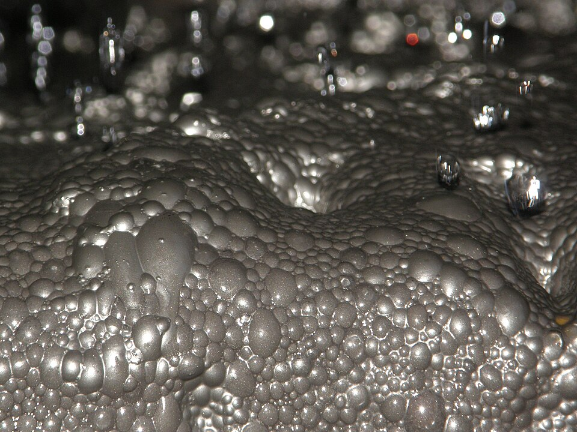
Processing plant at the Prominent Hill mine in South Australia
Photo: Geomartin, CC BY-SA 4.0
Prominenthill-flotation.jpg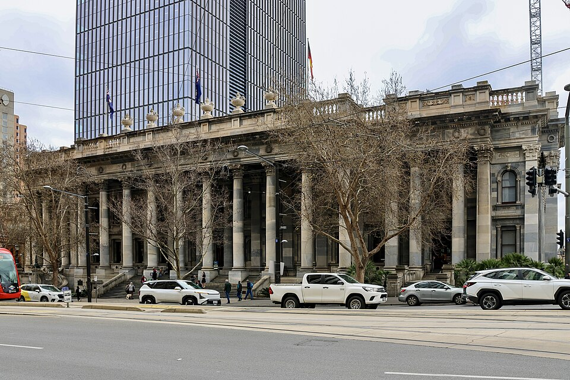
Parliament House on North Terrace, Adelaide
Photo: Yu Chu Chin, CC BY-SA 4.0
Parliament House in Adelaide, September 2026 (028A0835).jpg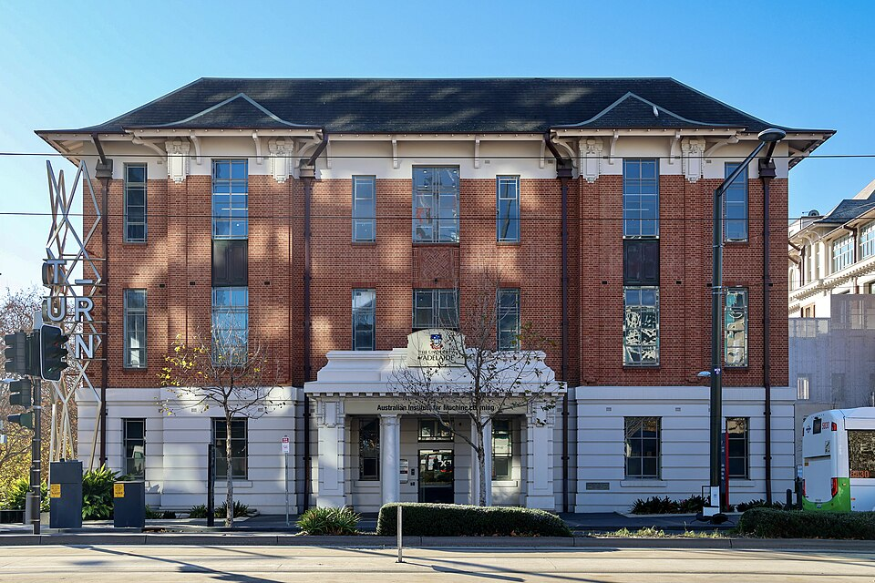
Australian Institute for Machine Learning building at Lot Fourteen
Photo: Yu Chu Chin, CC BY-SA 4.0
Australian Institute for Machine Learning at Lot Fourteen in Adelaide, July 2026 (028A8660).jpg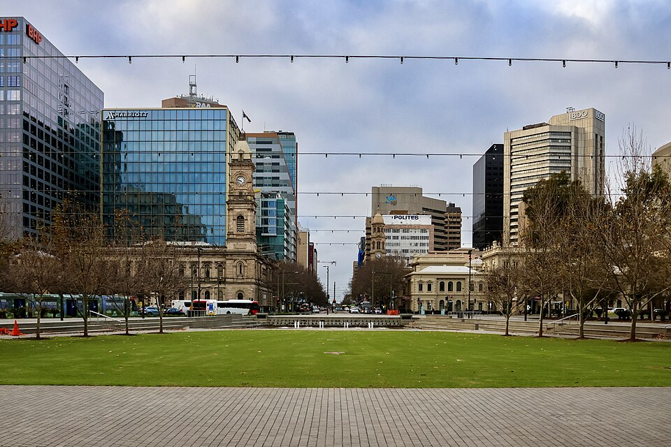
Victoria Square in the centre of Adelaide
Photo: Yu Chu Chin, CC BY-SA 4.0
Victoria Square in Adelaide, August 2026 (028A9370).jpg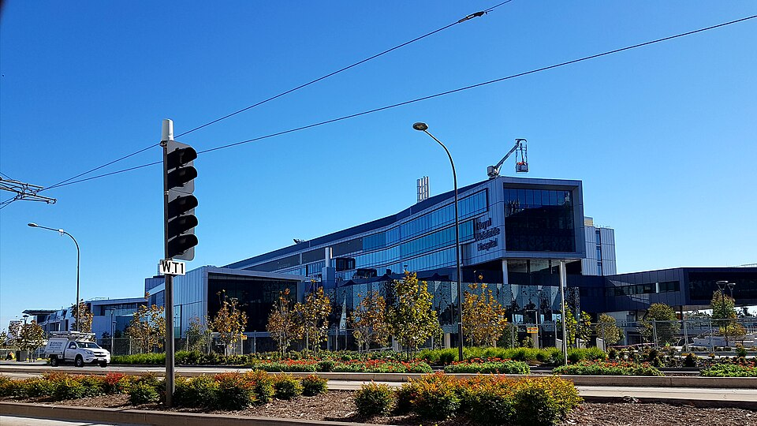
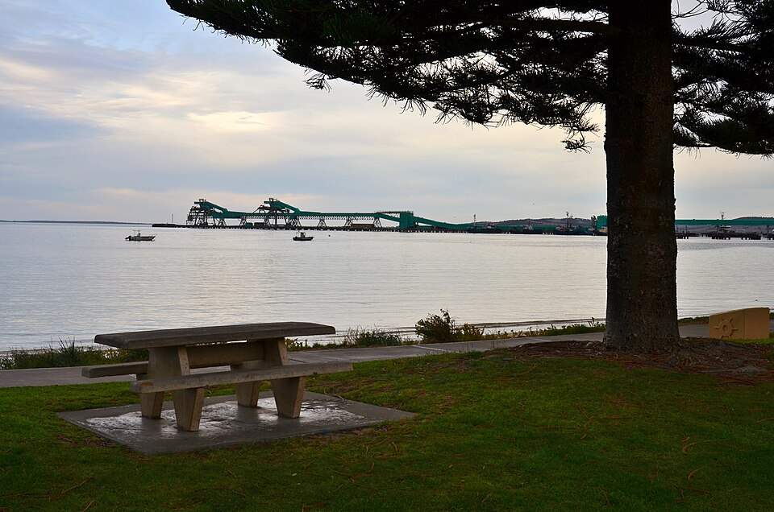
Port Lincoln wharf on South Australia's Eyre Peninsula
Photo: Bahnfrend, CC BY-SA 4.0
Port Lincoln Wharf, 2017 (01).jpg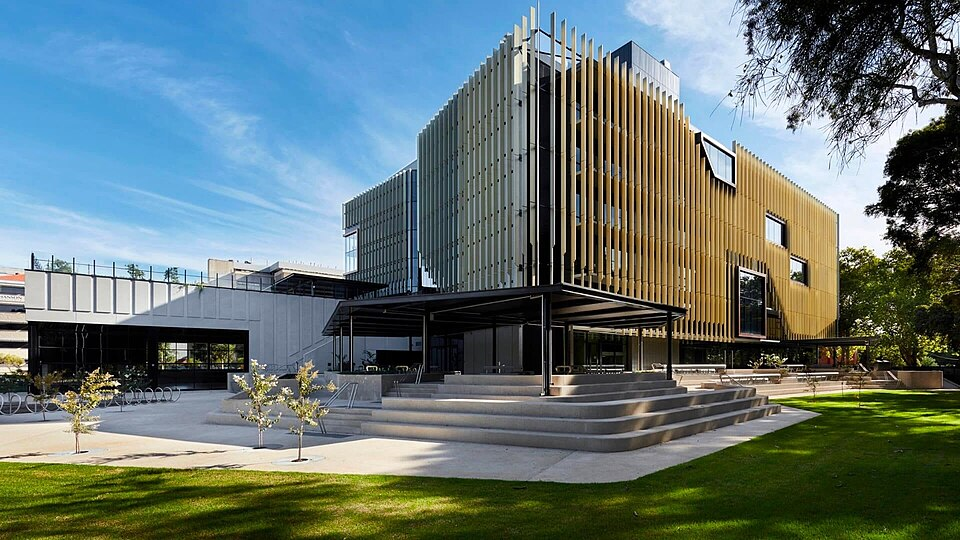
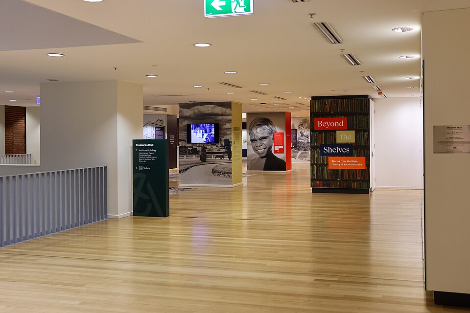
Interior of the State Library of South Australia
Photo: Yu Chu Chin, CC BY-SA 4.0
Interior of the State Library of South Australia (028A1064).jpg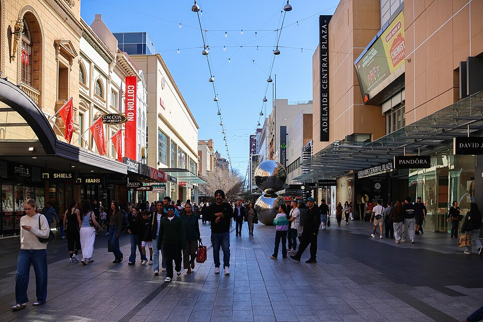
Shoppers in Rundle Mall, Adelaide
Photo: Yu Chu Chin, CC BY-SA 4.0
Rundle Mall in Adelaide, August 2026 (028A0713).jpg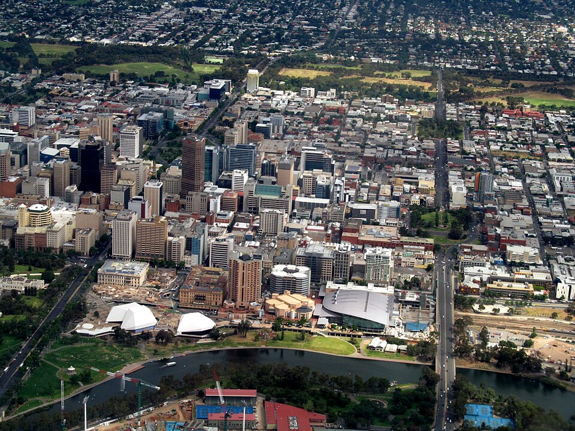
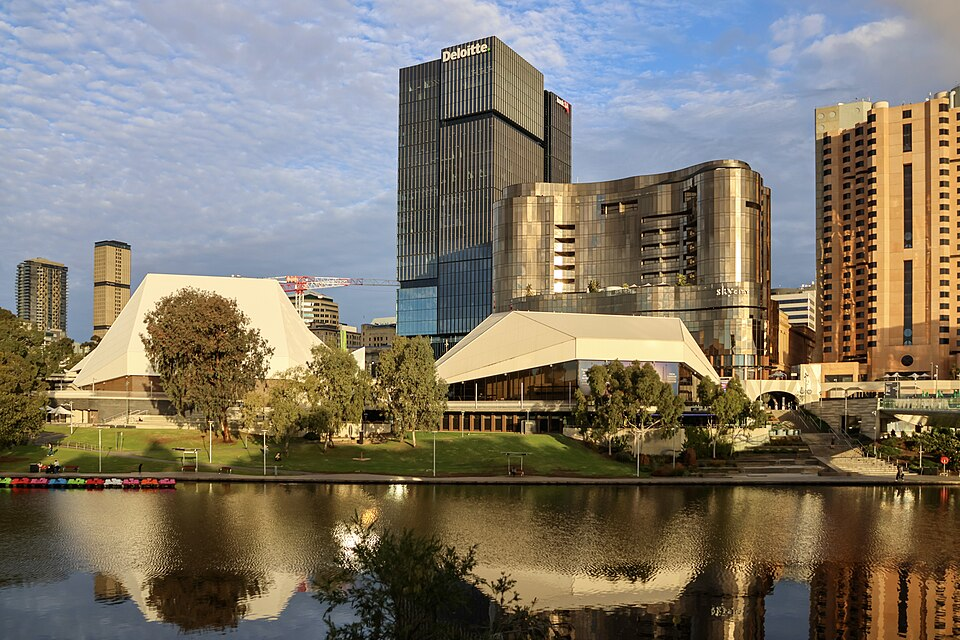
Adelaide Festival Centre beside the River Torrens
Photo: Yu Chu Chin, CC BY-SA 4.0
Adelaide Festival Centre in July 2026 (028A7419).jpg